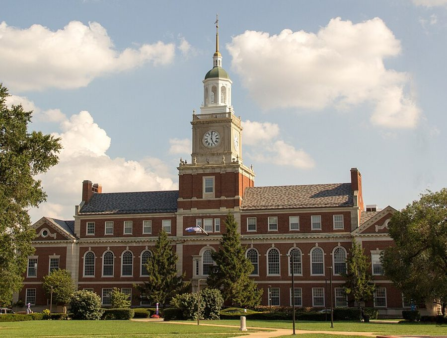
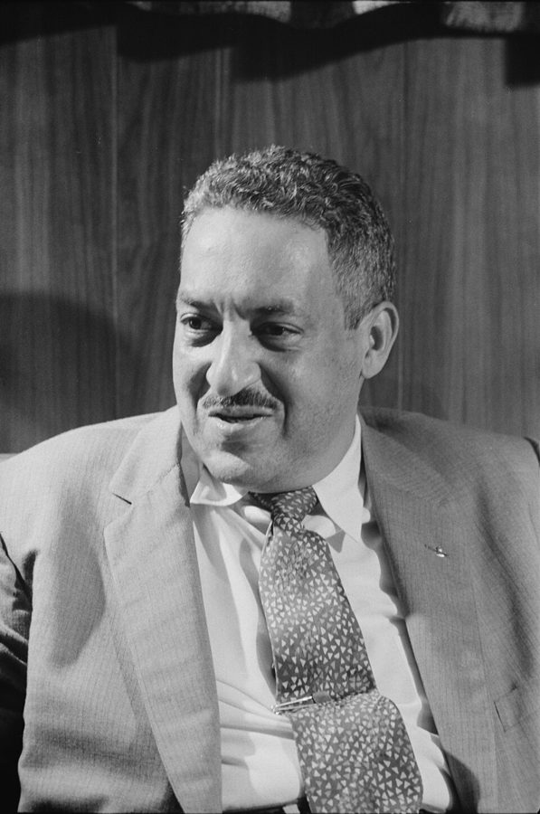
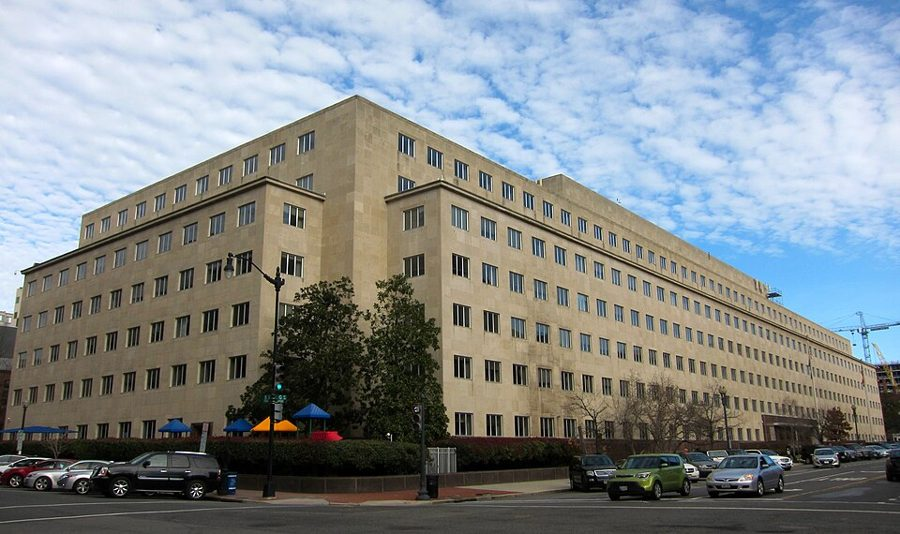

这一章在做什么
二十三到二十五岁。退伍后先回纽约，和养他的那家人彻底断了，再回华盛顿：白天在审计总署当办事员，晚上去霍华德大学上课。
这一页是进哈佛之前的两年，讲他怎样一步步认定「这里待不下去」。读的时候留意两位他敬重的老师，还有他每次碰到不公平时用的办法。
退伍
1954.5.17
1954.9
1955 秋
回纽约
回华盛顿
最高法院判决
搬进公寓
去哈佛
白天
审计总署办事员，全职
晚上
15 学分
12 学分
9 学分
住处
租两间房，走路到学校
公寓，离得远
霍华德的三个学期各从哪个月开始，书里没说，三格只表示先后。
本站示意图。上面一排是先后顺序，间隔不按时间比例。只有标了日期的三处是书里或史实给的。
出场的人
这一页的人分三拨：纽约的旧人，华盛顿的亲兄姐，霍华德的老师。有两个 William，别听混。
they 第 1 节，纽约养他的那一家 书里没点名，只说 family relationships in New York。因为一笔战争债券，这回断得很干净。
Ed Gally 男，第 3 章出现过 纽约机修车间的工头，第 3 章里像父辈一样照看过他。这里只提一句：他回去干了几天就走了。
Mary Frances 亲姐姐，住华盛顿 1952 年在联合车站接过他；这一页里送了他一台旧电视机。
William 亲哥哥 比他大两岁，自己也在霍华德念过书。第 10 节里和他对坐诉苦的就是这位。
Mr. Davis 第 3 节 审计总署里他的顶头上司，业余自己冲印照片。只出场一次。
佐治亚来的白人女主管 第 5 节，没有名字 管着一个几乎全是黑人的科。同事背后叫她 that cracker woman。
Sterling Brown /ˈstɜːrlɪŋ/，男，书里称 Mr. Brown 霍华德的写作课老师，诗人。真名实姓，见下面背景。
Dr. Marie Gadsden /ˈɡædzdən/，女，他叫她 Mrs. G 霍华德的另一位好老师，成了他一辈子的知己。
Dr. Dean William Dean，化名 社会科学的教授，迟到早退、满口大词。作者明说这个名字是他给起的。
两个 William，两个 dean。 哥哥叫 William；那位教授的化名是 William Dean，书里叫他 Dr. Dean。另外还有一个小写的 the dean of the college ，那是职务，学院院长，收到他六页长信的是这一位。
第 35 段的 the most cynical dean 也是职务。
背景：作者默认你知道的事
章名是一首歌
The Halls of Ivy 是 1950 年代初一部广播喜剧的主题歌。剧里的主角是一所虚构大学 Ivy College 的校长，由影星 Ronald Colman 主演，1954 年又拍成电视剧。ivy 是常春藤：爬满藤的老墙，就是美国人心里「大学」的样子。
上一章叫 Halls of Montezuma ，是陆战队军歌；这一章只换一个词，从军营的 halls 换到校园的 halls。不过这一页里还没有藤：他上的是夜课，白天坐办公室。
霍华德大学

霍华德大学的 Founders Library，1939 年落成。作者上夜课的那两年它已经立在这里。Derek E. Morton，CC BY-SA 4.0，维基共享资源 Howard University 在华盛顿，1867 年创办，校名来自南北战争后主管被解放奴隶事务的 Oliver O. Howard 将军。它是「历史上的黑人大学」里名气最大的一所：在南方的大学不收黑人的年代，黑人的医生、律师、教授很多出自这里。
学校每年有国会拨款，学费低。作者选它的理由只有两条：便宜，近。
华盛顿的隔离，和 1954 年 5 月 17 日
58 年里，「隔离但平等」算合乎宪法
//
1896
1953.6
1954.5.17
1955.5
Plessy v. Ferguson
车厢可以分开坐
华盛顿餐馆案
餐馆不得拒绝黑人
Brown 案
公立学校隔离违宪
Brown 第二次判决
怎么执行
作者 1952 年路过、随后搬回华盛顿，正在中间这几年。
本站示意图。横轴在 1896 和 1953 之间截断了。
华盛顿由国会直接管，学校按法律黑白分开，餐馆、影院按惯例分开。1896 年最高法院在 Plessy v. Ferguson 案里说，只要设施「隔离但平等」就不违宪，这成了隔离制度的法律依据。
1953 年 6 月最高法院判定首都的餐馆必须接待黑人；1954 年 5 月 17 日，Brown v. Board of Education 案九票对零票判定公立学校的种族隔离违宪，同一天另有一案专门针对华盛顿的学校。
第 6 节那位社会学教授走进教室的晚上，就是这一天。

Thurgood Marshall，1957 年。Brown 案里原告一方的首席律师，霍华德法学院 1933 年毕业；后来成为最高法院第一位黑人大法官。Thomas J. O'Halloran，公有领域，维基共享资源 审计总署、公务员、退伍军人

华盛顿 G 街的审计总署大楼，1951 年启用。AgnosticPreachersKid，CC BY-SA 4.0，维基共享资源 General Accounting Office（GAO）1921 年设立，隶属国会，负责查联邦政府各部门的账，2004 年改名 Government Accountability Office。作者在里面的一个文书科当办事员（clerk）。
三件制度上的事：被征去当兵的人，退伍后有权回原单位，资历照算，所以他一回去就是正式编制。年假（annual leave）按小时累计，离职时没休完的折成现金，所以扣一小时假就是扣一小时工资。
G.I. Bill 是给退伍军人的教育补助，二战后开始；朝鲜战争这一批是每月直接发钱给本人，学费自理。
电车晚点，一起迟到的人排队签到
同事
同事
我
同事
同事
扣 1 小时年假
扣 1 小时年假
只签一个 T
扣 1 小时年假
扣 1 小时年假
规矩照旧。他自己没有损失，也就没有资格去告。
本站示意图，第 5 节。T 是 tardy（迟到）的缩写，别的科迟到都只签这个。
暗房里的两只手
一个人干
两个人搭档
显影液
酸性药液
一只手 指甲染成深棕
另一只手 干净
显影液
酸性药液
甲的两只手 都染色
乙的两只手 都干净
只有一只手染色：一个人干。染得深：冲印得多。
本站示意图，第 3 节的推理。圆是手，涂色的是沾过显影液的。两种药水不能互相带进去，所以一只手只管一盆。
胶片时代，照片要自己在暗房（darkroom）里冲：相纸先进显影液（developer），再进一盆酸性药液让显影停下来。作者在陆战队干的就是这一行，所以握一下手就看得出。
放大机（enlarger）把底片投到相纸上放大。他后来忍痛卖掉的 Busch Pressman 是新闻记者用的那类相机，用 4×5 英寸的单张大底片。
一台 Busch Pressman 4×5 相机的正面。JayCubby，CC BY-SA 4.0，维基共享资源
Sterling Brown，和第七街
Sterling A. Brown（1901–1989）生在华盛顿，父亲就是霍华德的教授。他在 Williams College 和哈佛念的书，1929 年起在霍华德教了四十年。1932 年的诗集 Southern Road 用南方黑人的口语和蓝调、民谣的调子写普通人，这是他的名声所在。作者上他的课时对这些一无所知。
第七街和 T 街路口的 Howard Theatre，1910 年开业，照片是 2012 年翻修后的样子。Brown 在课上常提的「朋友」就在这个路口一带。Ron Cogswell，CC BY 2.0，维基共享资源
华盛顿的街道东西向用字母、南北向用数字命名，Seventh and T 是一个路口，离霍华德校园不远，是黑人平民的商业和娱乐街。书里说它名声不好。教授的朋友「都在第七街」，那位女生听了不知所措，原因在这里。
留个记号：后面还会回来
这一页里作者自己说「一辈子」的地方有两处，另外三条是前后章节接着的线。
平实的文字 第 8 节 写小说的念头在 Brown 的课上断了，但他说这门课教给他的 plain writing 管了后半辈子的非虚构写作。
Mrs. G 第 11 节 他说此后一直和她保持联系。后面的章节里她还会出现，认得这个称呼就行。
「这么想的不止他们」 第 6 节末句 判决当晚他泼的那盆冷水，这里只有四个词的尾巴。同一个话题他在本章第 21 节（下一页）会再说一次。
相机和暗房 第 3、4、7、9 节 第 3 章借来的相机、第 4 章陆战队的照相馆，到这里成了他认人、找工作、布置住处的尺子。
霍华德 第 8、11 节 他对这所学校的看法在这一页说得很重。这不是他最后一次和它打交道，第 6 章见。
词与短语
词条按书里出现的顺序排，小标题是原书用 • • • 隔开的各节。斜体小字是那句话里的几个词，在 Kindle 里搜它就能跳到那一句。单个的生词长按就能查，这里收的主要是词典帮不上忙的。
第 1 节 · 回纽约，断了
was not to resume
… I was not to resume either …
结果并没有接着过（从前的日子）
be to 说的是事后看注定的结局。第 1 章见过 it was not to be 。
with a sense of finality
… this time with a sense of finality, …
这一回是到此为止了
final 的名词。上一次断是第 2 章末离家，那次后来又恢复了来往。
war bonds
… because war bonds I had been …
战争债券
政府发的储蓄债券。新兵营里要求从军饷里扣钱买，他寄回家里保管，写信去要，没有下文。
make no fuss
… I made no fuss about the …
没有闹
第 1 章的 fuss with 是数落人；make a fuss 是吵闹、小题大做。
made their choice
… they had already made their choice. …
他们已经选了（要钱，不要他的信任）
全段没有一个重字，绝交就这么写完了。
high school equivalency diploma
… a high school equivalency diploma, if …
高中同等学力证书
没念完高中的人考试取得，效力等同毕业文凭。他高中没念完，军队里的测验成绩够换一张。
elevator man
… was the elevator man at Willoughby’s. …
开电梯的
老式电梯要专人扳手柄操作。Willoughby’s 是纽约的老牌相机店。
make something of himself
… Australia and make something of himself …
混出个样子来
it dawned on me
… it slowly dawned on me that …
我才慢慢反应过来
dawn 是天亮。包袱在句尾：老人懊悔得像昨天的事，其实已过去三十多年。
第 2 节 · 回华盛顿
permanent civil service status
… with permanent civil service status and …
正式的公务员编制
过了试用期、不能随便辞退的身份。见背景。
an offer I could not refuse
… an offer I could not refuse, …
好得没法不要的条件
电影《教父》（1972）之后，这话多了一层「不答应不行」的意思。这里是字面的好事。
livable
… was a more livable place for …
比较能过日子了
不是夸「宜居」。第 3 章里，这座城市的隔离让他越来越受不了。
Right here
… she said: “Right here—in the station.” …
就在这儿
第 3 章里他在市中心宁可饿着也不肯站着吃。姐姐这四个词就是变化的证据，作者不再多说。
第 3 节 · 一次握手
immediate supervisor
… introduced to my immediate supervisor in …
顶头上司
immediate 这里是「中间不隔人的」，不是「立刻」。
a fellow photographer
… to meet a fellow photographer, especially …
同是玩摄影的人
fellow 放在名词前：同类的、同行的。
figure it out
… him how I figured it out, …
推出来的
对方的回答只有两个词 Of course ：听完就觉得理所当然。这正是开头说福尔摩斯不爱讲方法的原因。
developer
… recognized the stains as developer stains, …
显影液
不是开发者。暗房里让影像显出来的药水，会把指甲染成棕色。
elementary
… would undoubtedly have called it “elementary.” …
「这太简单了」
福尔摩斯的口头禅，本义是初级的。
第 4 节 · 夜课和唱机
a battery of tests
… on a battery of armed services …
一整套测验
battery 不是电池，是「一组、一排」，本义是一排炮。
get … out of the way
… introductory courses out of the way. …
先把……了结掉
字面是挪开挡路的东西。指先修完必修的入门课。
a sequence
… first course in a sequence might …
前后衔接的一组课
比如经济学一、经济学二。一门排在晚上、下一门排在上午，上班的人就接不上。
reputedly
… a black college, reputedly the best …
据说是
「名声上是」。作者不替这个名声担保，后面几节就是他的看法。
semester hours
… out taking 15 semester hours at …
学分
一门课每周上几小时就算几个学分。15 学分是全日制学生的正常课量，他是下了班去上的。
do the sensible thing
… I finally did the sensible thing …
总算做了件明白事
sensible 是明智，不是敏感（sensitive）。finally 在笑自己拖了三个学期。
the G.I. Bill
… receiving money from the G.I. Bill, …
退伍军人教育补助
G.I. 指美国兵，bill 是法案。见背景。
ambitiously listed as
… record-player, ambitiously listed as “high fidelity.” …
口气不小地标着（「高保真」）
ambitiously 在挖苦商家。high fidelity 就是 hi-fi，1950 年代的时髦词。
throw in
… the salesman threw in a long-playing …
额外白送
long-playing record 是 LP 密纹唱片，一面能放二十多分钟，1948 年才上市。
Scheherazade
… to “Scheherazade” enough times to become …
《天方夜谭》组曲
读 /ʃəˌherəˈzɑːdə/，听书时很难认出来。俄国作曲家里姆斯基-科萨科夫 1888 年的管弦乐作品。后面的 Grieg 是挪威作曲家格里格。
第 5 节 · 迟到的规矩
legal sanction
… not always with legal sanction. I …
法律上的认可
sanction 有两个相反的意思：批准，制裁。这里是批准。
the only word for it
… that is the only word for it …
只有这个词合适
插进来强调前面的 ruled（统治）：不是管理，是统治。
tardy
… signing a “T” for tardy on …
迟到
学校和机关考勤用的词，平时说 late。
annual leave
… meant losing an hour’s annual leave …
带薪年假
leave 作名词是假期。见背景。
make waves
… I could afford to make waves. …
惹事，搅局
could afford to ：担得起后果。他不打算在政府干一辈子，所以不怕得罪人。
cash in
… already counting on cashing in my …
兑成现金
count on 是指望着。
was not about to
… and was not about to lose …
绝不肯
肯定式 be about to 是「即将」；否定式是口语里的「才不会」。
administrative expediency
… classic tradition of administrative expediency: Thereafter …
官僚的权宜之计
expediency：不管对不对，怎么省事怎么办。说它是 classic tradition（优良传统）是反话。
dock
… but continued to dock everyone else. …
克扣
和码头无关。dock pay / leave ：扣工资、扣假。
legal standing
… me of any legal standing to …
提出申诉的资格
法律术语：自己的权益受了损，才有资格告。不扣他一个人的，他就告不成。
far from being emboldened
… Far from being emboldened by my …
非但没有壮起胆子
far from + doing：不但没有……反而。
an “in” with somebody in high places
… some special “in” with somebody in high …
上头有人，有门路
in 作名词：进得去的关系。
cracker
… not sleeping with that cracker woman, …
对南方穷白人的蔑称
不是饼干。佐治亚州尤其常被这么叫。同事说话很粗，作者照录。
neither relaxed nor amused
… she was neither relaxed nor amused. …
她可是既不轻松也不觉得好笑
把上一句里形容自己的两个词原样还给她。往轻里说：她被他气得够呛。
第 6 节 · 判决那天晚上
momentous
… most amazing and momentous thing has …
意义重大的
不是 momentary（片刻的）。读 /moʊˈmentəs/。
over-rule
… had just over-ruled the “separate but …
推翻（以前的判例）
法庭用语。“separate but equal” doctrine 即「隔离但平等」原则，见背景。
party-pooper
… the role of party-pooper. My classmates …
扫兴的人
口语。cast me in the role of 是戏剧用语：把我派成了这个角色。
They were not alone
… all. They were not alone. …
这么想的不止他们
不是「他们不孤单」。四个词把话从一间教室引到整个国家。
第 7 节 · 自己的公寓
roomer
… who has been a roomer for …
在别人家里租一间屋的房客
他从十七岁起一直这么住。后面的 rooming 是同一件事。
efficiency
… was only an “efficiency” or studio …
一间屋的小公寓
不是效率。美国租房广告里的说法，比 studio 还省：厨房只是墙边的一小块。
backlog of negatives
… But my backlog of negatives was …
攒下没印的底片
negative 作名词是底片。backlog 的意思和你工作里用的一样。
fixed quite nicely
… in some ways fixed quite nicely. …
安顿得挺像样
fixed 不是修好。be well fixed ：手头、条件过得去。
第 8 节 · Mr. Brown 的课，Dr. Dean 的课
have promise
… tell me that I had promise. …
有潜力
promise 不是承诺。那位文学代理人的信见第 3 章。
he didn’t have to
… say so, but he didn’t have …
他用不着说
省略了 say so。批语比小说还长，而且句句在理，结论不言自明。
the great American novel
… or the great American novel, or …
「伟大的美国小说」
固定说法，每个文学青年都想写的那一部。后面跟一句「连过得去的小说也不写了」，是自嘲。
plain writing
… and power of plain writing, which …
平实的文字
plain 是不加修饰，在这里是褒义。这本书自己就是这么写的。
fraternity initiation
… part of his fraternity initiation. To …
兄弟会的入会考验
美国大学的学生社团，用希腊字母命名，新人入会要过一关关捉弄人的仪式。
a hell of a way to
… seemed like a hell of a …
真是个……的好办法
反话。a hell of a 是口语里的加强语气。
unctuous
… or unctuous about it, or even …
油腔滑调地装虔诚
读 /ˈʌŋktʃuəs/。somber（板着脸）、unctuous、pompous（摆架子）三个词排下来，都是「样子」。
serious about
… but they were not serious about …
当真
这一句的关键是 somber 和 serious 的区别：脸色可以严肃，心里并不把学问当回事。
Green Pastures
… it reminded me of Green Pastures. …
《青青草原》
1930 年的话剧，1936 年拍成电影：全黑人演员，把《圣经》故事演成南方乡下黑人想象中的样子。他的意思是人人都像在台上扮角色。
off the plantation
… not as far off the plantation …
离开种植园
plantation 是蓄奴时代的大庄园。Brown 没有反驳他，而是给了一个解释：这些做派是那段历史留下的。we 把自己也算了进去。
who can be called
… who can be called William Dean. …
姑且叫他
作者明说这是化名。
religiously
… at 5:40, took attendance religiously for …
一丝不苟地
和宗教无关。take attendance 是点名。点名最认真，上课最不认真。
at face value
… they took at face value a …
照字面当了真
face value 是钞票的面值。
umbrage
… other students and umbrage from Dr. …
被冒犯后的不快
读 /ˈʌmbrɪdʒ/，常说 take umbrage 。
He did nothing—except
… He did nothing—except read the letter …
他什么也没做，只做了一件事
破折号后面才是要命的：把信在全体教师会上念了。
word got around
… and word must have gotten around. …
消息传开了
word 不带冠词 = 消息、风声。
a cramped existence
… to rooming and a cramped existence. …
憋屈的日子
cramped 本义是地方挤。这个短语在第 11 节又用了一次。
第 9 节 · 一份暗房工作
nail it down
… I could never nail it down …
把它坐实
字面是用钉子钉牢。
eliminate the other possibilities
… until I eliminated the other possibilities. …
把别的可能一一排除
又是福尔摩斯的办法。所以他要请假、赶第一份报纸、排第一个：只有这样才能排除「来晚了」。
on the paper’s part
… a mistake on the paper’s part, …
是报纸那一方（弄错了）
on 某人's part ：出自某人一方。paper 是报纸。
write my Congressman
… went home and wrote my Congressman. …
给本选区的国会议员写信
美式用法，write 后面直接跟人。选民找议员过问政府部门的事，是常规渠道。
pooh-bah
… of the big pooh-bahs greeted me …
大人物（带挖苦）
读 /ˈpuːbɑː/。出自 1885 年的英国喜歌剧 The Mikado ，里面一个身兼数职的官叫 Pooh-Bah。
that way
… “I don’t want it that way.” …
照那种方式（得到它）
他要的是凭带去的照片被录用。对方连看都不看就给，那是给议员面子。
第 10 节 · 最冷的冬天
beyond her wildest dreams
… had succeeded beyond her wildest dreams!” …
她做梦都不敢想的
our mother 是生母 Willie。两个人正觉得自己一事无成，哥哥忽然换了一把尺子。
第 11 节 · 两封推荐信，两句临别的话
a gem of a human being
… a gem of a human being, …
难得的好人
a gem of a + 名词：……里的宝石。同样的结构还有 a hell of a 。
confidante
… She became a confidante with whom …
可以说心里话的人
读 /ˈkɑːnfɪdænt/。词尾带 e 是女性。
phonies
… were more impressed by phonies like …
装腔作势的人
phony 作名词，口语。和 phone 无关。
drop names
… the phonies liked to drop names, …
把名人的名字挂在嘴上
名词是 name-dropping。
Seventh and T Streets
… down at Seventh and T Streets”—a …
第七街和 T 街的路口
美国人用两条街名说一个路口。见背景。
what to make of
… know what to make of Mr. …
该怎么看（这个人）
What do you make of it? = 你怎么理解？
stultifying
… develop in the stultifying atmosphere there. …
把人闷得变钝的
读 /ˈstʌltɪfaɪɪŋ/。这一节的关键词。
out of the question
… was out of the question for …
根本不可能
不是「没问题」（那是 out of question，已很少用）。transfer student 是转学生。
retirement money
… savings, retirement money from the government, …
离职时退回的养老金缴款
他才二十五岁，不是领退休金。公务员每月扣的养老金，辞职时可以一次取出。
bet everything on
… betting everything on the outcome of …
把全部家当押在……上
下一段接着用 gamble：他赌，还得有学校肯在他身上赌。
my sights were aimed high
… my sights were aimed high: Harvard, …
我瞄得很高
sights 是枪上的瞄准具。
College Board exams
… I took the College Board exams. …
大学入学标准化考试
College Board 是主办 SAT 的机构。哥大没等他考就拒了。
Radcliffe
… was a student at Radcliffe. Sterling …
拉德克利夫学院
当时哈佛本科只收男生，Radcliffe 是和它配对的女子学院，在同一个镇上。
victim mentality
… pitfalls of a victim mentality. …
把自己当受害者的心态
pitfall 是陷阱。这是作者后来常谈的题目，这里是借老师的话头一次出现。
make it
… tell me you didn’t make it …
成功，挺过来
后半句的 ’cause 是 because，white folks 是白人，mean 是刻薄。Brown 故意用家常口语说。
in his best Southern accent
… In his best Southern accent, Sterling …
拿出最地道的南方腔
best 是「学得最像的」。下一句里有那个 n 开头的词：这是黑人长辈对黑人晚辈说的玩笑话。这个词在今天的美国是禁忌，认得就行，自己不要用。
值得停下来的句子
It’s been more than fifty years since Plessy v. Ferguson—and we still don’t have ‘separate but equal.’— 第 6 节，判决当晚轮到他发言。本站译：「Plessy 案到现在五十多年了，我们连『隔离但平等』都还没有。」
这句话要拆成两层。第一层是事实：1896 年的判决只要求设施「平等」，五十八年里连这一条也没兑现过。第二层是推论，在他紧接着的反问里：一纸判决和它的落实是两回事，旧的没落实，新的凭什么快。
他并不反对判决。他反对的是把一件事的宣布当成它的完成。全班只有他这么说，他落了个扫兴的名声；这一节的最后四个词说明，他到写书时还是这个看法。
But, whatever the excuse for mediocre work, the only proof that you can do top quality work is to do top quality work— 第 11 节，申请转学时掂量自己的成绩。本站译：成绩平平有多少理由都行，可要证明你做得出一流的东西，只有一个办法，就是把它做出来。
句子的主干是 the only proof … is to do … ，主语和表语里的宾语是同一个短语，故意重复。前面他刚替自己找了理由：课选得太多，白天还上班。然后一个 But 把理由全推开。
这是全页里他对自己最不客气的一句，也是他后来衡量人和制度的标准：看做出来的结果，不看理由。mediocre 读 /ˌmiːdiˈoʊkər/，平庸；他用它形容了自己的成绩，也形容了学校。
检查一下理解
先在心里答，再点开。答错的那题，回书里把那一节再读（或再听）一遍。
1. 第 1 节说他和纽约的家人「又一次」断了。起因是什么？他吵了吗？ 起因是新兵营里被要求买、寄回家保管的战争债券，他写信去要，没有还给他。他没有为钱吵，只是认定对方在钱和他的信任之间已经选了一样。这里的家人是养他长大的那一家，不是华盛顿的亲兄姐。
2. 他拒绝签字扣年假以后，科里迟到扣假的规矩改了吗？同事们怎么想？ 没改。上面只是从此不扣他一个人的，别人照扣，这样他自己没有损失，就没有资格去申诉。同事也没有跟着硬气起来，反而猜他上头有人，甚至猜他和女主管有私情。
3. 最高法院判决那天晚上，他是站在反对取消隔离的一边吗？ 不是，全班包括他都赞成。他质疑的是同学们的期待：以为判决一下，种族和贫穷的问题就都解决了。他的理由是旧判例要求的「平等」五十多年都没落实。
4. Dr. Dean 的课他每次考试都是 A，为什么总评是 B？他写给院长的信起了什么作用？ 因为缺课，出勤被扣了分；他缺课是因为在课上提问只招来教授和同学的反感。信没有带来任何处理，院长只是在教师会上把它念了一遍，虽然没念名字，他还是被认了出来，在学校里出了名。注意 Dr. Dean 是教授的姓，收信的 dean 是院长。
5. 国家安全局最后把那份暗房工作给了他，他为什么不要？ 他起先被告知那里根本没有摄影部门，给国会议员写信之后，对方才请他去参观，并且不看他带的照片就说工作归他。他要的是凭作品被录用，不是因为有人过问才被安抚，所以回绝了。
6. Sterling Brown 临别说的两句话，各在提醒他什么？ 第一句：要是没念下来，别回来说是因为白人待他不好，也就是别把失败算在别人头上。第二句：哈佛毁掉的黑人比劣酒还多，也就是别被哈佛的名头和自己在那里的成绩冲昏头。一句防自怜，一句防自满。